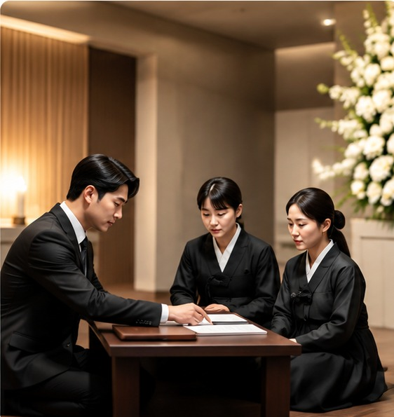
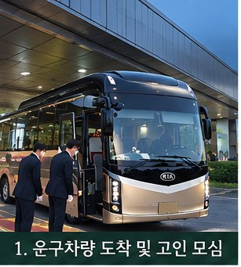
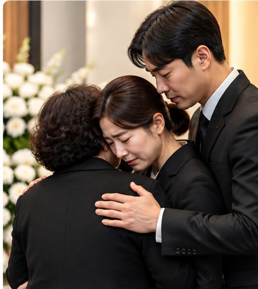

고요한 배웅
형식보다 마음에 집중하는 간결한 장례150만원
핵심 절차부터 차분하게 안내하고, 불필요한 선택은 권하지 않는 실속형 상담 상품입니다. 장례지도·운구·의전·용품의 실제 제공 범위는 계약 전 항목별로 확인합니다.
☎ 상담연결고인을 존중하고, 유가족의 마음까지 세심하게
모시는 장례 서비스를 제공합니다.
전국 통합 상담센터 · 지역 전담팀 연계
지역을 선택해 주세요.
지역을 선택한 뒤 상담연결을 누르면 전국 통합 상담센터로 연결됩니다.

장례는 단순히 절차를 진행하는 일이 아닙니다. 한 사람의 삶을 존중하고, 남겨진 가족의 슬픔을 헤아리며, 마지막 이별의 시간을 정성껏 준비하는 일이라고 믿습니다.
삼빛라이프케어는 화려한 말보다 진심 어린 행동으로 신뢰를 쌓겠습니다. 가족의 뜻을 존중하고, 서비스와 비용을 알기 쉽게 설명하며, 불필요한 부담을 줄일 수 있도록 노력하겠습니다.
전국 어디에서나 고객이 믿고 찾을 수 있는 장례 서비스 브랜드로 성장하는 것이 목표입니다. 회사의 규모보다 한 번의 상담과 한 번의 장례에서 지키는 약속을 소중히 여기겠습니다.
가족의 상황에 맞춰 선택하는 장례 서비스 · 아래 상담 기준 금액과 포함 범위를 확인하세요.

핵심 절차부터 차분하게 안내하고, 불필요한 선택은 권하지 않는 실속형 상담 상품입니다. 장례지도·운구·의전·용품의 실제 제공 범위는 계약 전 항목별로 확인합니다.
☎ 상담연결
가족의 추모 시간과 예산의 균형을 고려한 맞춤형 상담 상품입니다. 기본 진행 절차와 의전·용품의 선택 사항을 구분해 설명하고, 필요한 항목만 비교하여 결정하도록 돕습니다.
☎ 상담연결보다 세심한 진행과 의전 구성을 원하시는 가족을 위한 상담 상품입니다. 장례 인력·운구·용품·추모 공간 관련 선택 사항을 함께 검토하고, 추가 비용은 결정 전에 안내합니다.
☎ 상담연결※ 표시 금액은 상담 기준 금액입니다. 상품별 포함 품목, 장례식장·시설 이용료, 식사비, 화장·장지 비용, 지역 및 추가 선택에 따른 비용은 계약 전 별도 확인이 필요합니다. 모든 비용이 포함된 확정 총액을 의미하지 않습니다.
복잡한 설명보다 중요한 세 가지 약속
상황과 지역, 이용 시설에 따라 절차는 달라질 수 있습니다.
장례 서비스를 이해하는 데 도움이 되는 이야기
삼빛라이프케어와 함께하신 소중한 경험을 문자로 전해주세요. 담당자가 내용을 확인하고 게시 동의를 받은 후, 개인정보 보호를 위해 성함을 익명 처리하여 등록해 드립니다.
✉ 후기 문자 보내기미리 알아두면 갑작스러운 순간에도 선택의 기준이 생깁니다. 사전 상담을 통해 서비스의 차이, 준비 절차, 비용을 미리 살펴보고 가족에게 맞는 기준을 세울 수 있습니다.
SAMBIT LIFECARE · 시설 안내
지역과 시설을 선택하시면 삼빛라이프케어가 상담을 도와드립니다. 확인되지 않은 비용은 임의로 안내하지 않으며, 관내·관외 요금과 추가비용은 사전에 확인해 드립니다.
전국 장례식장 이름과 주소를 확인하고, 선택하신 시설에 관해 삼빛라이프케어와 상담하세요.
제공해 주신 「장례식장 빈소 안치구수.xlsx」 자료를 기준으로 구성했습니다. 빈소 가격은 자료에 포함되어 있지 않아 표시하지 않으며, 운영 여부와 실제 비용은 해당 시설에 확인해 주세요.
지역을 고르거나 장례식장 이름·주소로 검색하세요.
선택한 장례식장에 직접 전화하는 것이 아니라 삼빛라이프케어 상담사에게 연결됩니다. 통화 시 시설명을 말씀해 주세요.
화장시설 · 봉안시설 · 자연장지 · 묘지 · 산분장
제공된 시설 자료와 공개된 화장시설 현황을 바탕으로 안내합니다. 실제 요금과 이용 가능 여부는 시설에 확인해 주세요.
화장시설 명부는 과거 공개자료를 포함합니다. 운영 여부와 실제 요금은 시설에 확인해 주세요. 검색 결과가 없어도 해당 지역에 시설이 없다는 뜻은 아닙니다.
※ 원본 화면의 '검색 결과 1,546곳'은 전체 서비스의 표시 수치입니다. 현재 확보된 자료에는 그중 일부만 포함되어 있어, 이 목록의 건수는 실제 수록 자료를 기준으로 표시합니다. 공개 가격의 '0원~'은 무료라는 뜻으로 해석하지 않으며, 항목별 가격표 없이 총비용을 계산하지 않습니다.
공식 화장예약 안내
보건복지부 e하늘 장사정보시스템에서 화장 예약 및 예약 가능 일정을 확인하실 수 있습니다. 예약은 공식 사이트에서 직접 진행되며, 시설·일정에 따라 이용조건이 다를 수 있습니다.
e하늘 공식 화장예약 시스템 열기 ↗예약에 어려움이 있으시면 삼빛라이프케어에 문의해 주세요. ☎ 상담 연결
원스톱 예상비용
각 단계를 선택할 때마다 예상비용이 즉시 합산됩니다. 150만·250만·340만 원 상품 외 시설·화장·장지 금액은 실제 요금이 아닌 수정 가능한 계산용 예시 예산입니다.
장례형태 › 장례식장 › 장례서비스 › 화장 › 장지 › 추가서비스 › 결과확인
장례서비스 상품의 표시가격(150만·250만·340만 원)과 그 밖의 항목별 예시 예산을 합산합니다. 예시 예산은 실제 시설의 요금이나 삼빛라이프케어의 확정 견적이 아닙니다. 상품에 포함된 품목은 중복 선택하지 않도록 상담 시 확인하세요. 관내·관외, 시설 이용시간, 음식 인원, 선택 품목에 따라 달라지므로 계약 전 반드시 서면 견적을 확인하세요.
고인 한 분 한 분을 존중하며, 유가족의 마음에 따뜻한 위로가 되겠습니다.